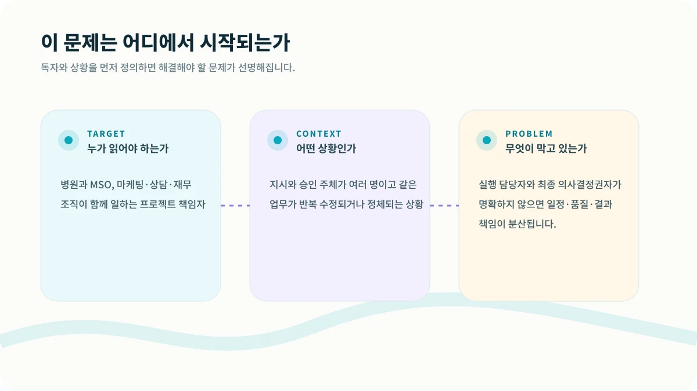
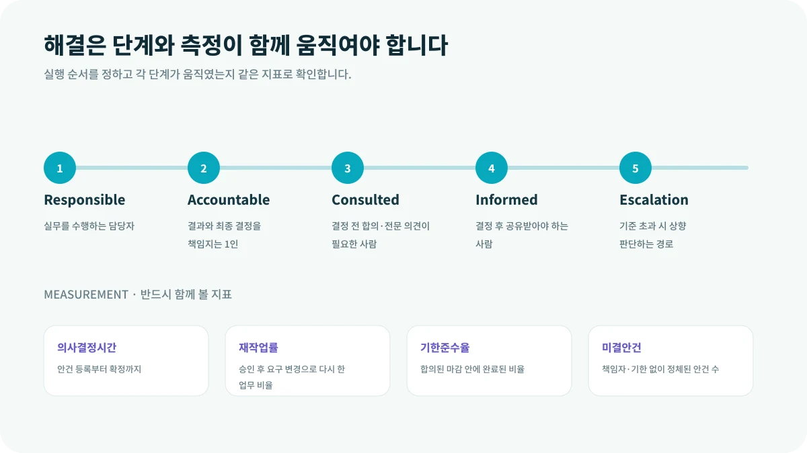

프로젝트가 지연될 때 사람들은 보통 실행력이 부족하다고 말합니다. 그러나 실제로는 누가 최종 결정하는지 모르는 경우가 더 많습니다. 병원장, 사업책임자, 마케팅팀, 외부 파트너가 모두 의견을 내지만 마지막 책임자는 비어 있습니다.
이 글은 병원과 MSO, 마케팅·상담·재무 조직이 함께 일하는 프로젝트 책임자에게 특히 필요합니다. 지금처럼 지시와 승인 주체가 여러 명이고 같은 업무가 반복 수정되거나 정체되는 상황이라면, 먼저 숫자를 늘리기보다 문제의 구조를 다시 볼 필요가 있습니다.

CORE INSIGHT핵심은 관점을 바꾸는 것입니다
랜딩페이지 문구 하나를 두고 마케팅팀이 수정하고, 원장이 다시 바꾸고, 상담팀이 다른 요구를 전달하면 제작자는 누구의 결정을 따라야 할지 알 수 없습니다. 최종 책임자 한 명과 사전 합의 대상이 정해지면 재작업이 크게 줄어듭니다.
WHY IT HAPPENS왜 이런 일이 반복될까요?
1. 업무 담당과 결정권은 다릅니다
실행자가 있어도 최종 승인자가 여러 명이면 일정과 품질 책임이 흐려집니다.
2. 공동책임은 무책임이 되기 쉽습니다
한 산출물에는 원칙적으로 한 명의 최종 책임자를 지정합니다.
3. 예외와 에스컬레이션을 정의합니다
의료·법무·예산·브랜드 이슈는 일반 업무와 다른 승인선을 가져야 합니다.
HOW TO SOLVE현장에서는 이렇게 풀어야 합니다
해결은 한 번의 캠페인이나 담당자의 노력만으로 완성되지 않습니다. 다음 다섯 단계를 하나의 흐름으로 연결하고, 단계가 바뀔 때마다 기록을 남겨야 합니다.

MEASUREMENT무엇을 측정해야 할까요?
결과만 보면 문제가 발생한 위치를 알 수 없습니다. 아래 지표를 같은 기간과 같은 정의로 추적하면 어느 단계가 실제 병목인지 확인할 수 있습니다.
| 의사결정시간 | 안건 등록부터 확정까지 |
|---|---|
| 재작업률 | 승인 후 요구 변경으로 다시 한 업무 비율 |
| 기한준수율 | 합의된 마감 안에 완료된 비율 |
| 미결안건 | 책임자·기한 없이 정체된 안건 수 |
START THIS WEEK이번 주에 바로 확인할 네 가지
R&R은 조직도를 예쁘게 만드는 문서가 아닙니다. 특정 안건에서 누가 실행하고, 누가 결정하며, 어떤 조건에서 상향 보고하는지를 명확히 하는 의사결정 시스템입니다.
GUARDRAIL실행 전에 반드시 확인할 점
본 콘텐츠는 병원 사업·운영을 위한 일반 정보이며, 의료·법률·세무 자문을 대체하지 않습니다. 실제 적용 시 관련 전문가와 최신 법령을 확인해야 합니다.
현재 병원의 병목을 함께 찾아보세요.
시장·마케팅·상담·CRM·운영 중 어디에서 성장이 멈추는지 구조적으로 진단합니다.